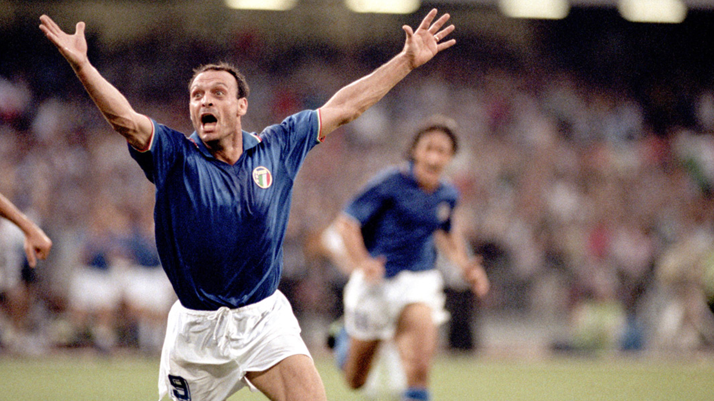

Italia Home Kit
1990

Embarking on a football pilgrimage to Italy for the 1990 World Cup, my journey was a tapestry woven with the excitement and fervor of the beautiful game. Navigating the vibrant cities hosting the tournament, the atmosphere was charged with the anticipation of witnessing the world's finest teams in action. Amidst the buzz, I found myself in a bustling merchandise haven, drawn to the allure of the iconic Italy kit. The azure blue jersey, adorned with the Azzurri emblem, encapsulated the national pride and footballing heritage of the host country. As I proudly donned the kit, I became part of a collective spirit that transcended borders. The matches were an unfolding saga of drama and skill, each moment etching itself into the collective memory of football enthusiasts worldwide. The Italy kit, a tangible relic of that immersive World Cup experience, serves as a cherished memento, not just of the travel, but of the unity and passion that define the magic of the global football community.